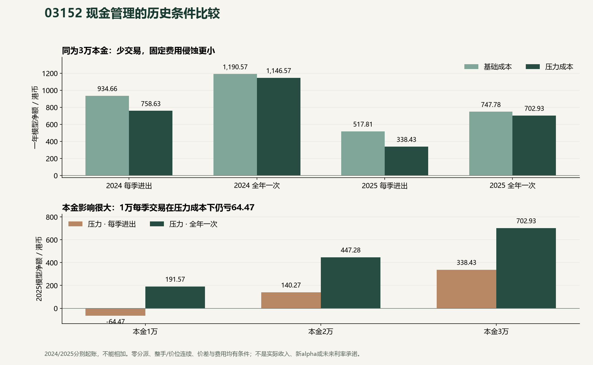
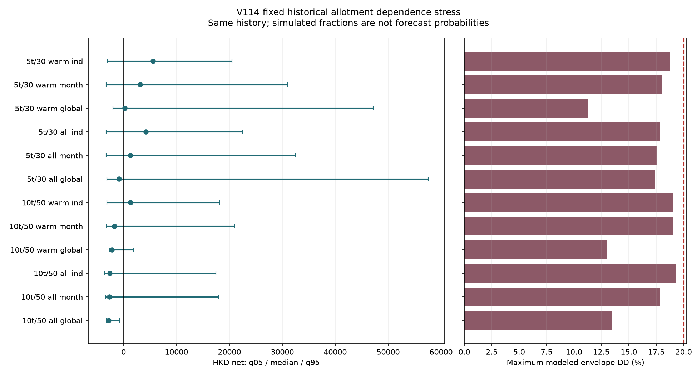

研究进展与证据
持续挖掘，逐项检验
总目标持续推进，稳定盈利尚未证实。历史候选交付是一项里程碑；港美研究与三套各自原T0纸面并行。
正在读取同步时间
正在读取研究快照…
本轮焦点
样本首日中位涨跌
首日上涨只数
首日破发只数
阶段来自最近一次同步。快照超过15分钟后停止活动动画；刷新不会启动回测或交易。
A段待独立验收
| 阶段与期间 | 基础累计净额 | 压力累计净额 | 压力保守DD | 压力负月 |
|---|
查看各本金的基础/压力情景
| 阶段 | 初始本金 | 基础净额 | 压力净额 | 压力报价保守回撤 | 压力负月 |
|---|
A段账户曲线
来源与前向评价进展
不增加因子或策略试验数前向评价 · 描述性月报已接受
正式统计推断未启用03152 · 2024零普通分派依据
仅局部来源补强03196 · 上市类KFS与当前报价
仅来源补证03196 · 2024成交活跃度
执行预筛未通过港股通首次开放买入
| 标的与生效日 | 1 万港币 | 2 万港币 | 3 万港币 |
|---|
每边计入 3 个最小价位的滑点和 30 港币平台费，另计佣金、印花税与适用征费。开盘参考价来自富途和 Yahoo 日线，未取得开盘竞价成交明细。
3 月批次对照股筛选
| 候选 | 相对轻松健康 | 成交额筛选 |
|---|
剩余候选仍待核当时的行业、指数市值分组与自由流通市值。
股东批准后的美股现金并购
2019 年第一季度来源试点终局样例与行情核对
PACB 并购失败的损失与资金占用
| 本金 | 全仓 | 半仓 | 四分之一仓 |
|---|
联储预定降息后持有 IEF
固定规则筛退| 本金 | 基础净额 | 压力净额 | 压力回撤 | 压力匹配差额 |
|---|
压力情景包含更大的换汇价差、交易滑点和资金到账延迟。账户只使用已交收现金，结果来自历史模拟。
内部人买入披露能确认交易场所吗？
Form 4 来源试点两笔代码 P 均为 ABBV 董事直接付价买入普通股，分属不同披露日。原件均未披露交易场所。SEC 的 P 代码涵盖公开市场和私下买入，因此本样本没有足够的严格公开市场买入事件来做收益检验。
用美东申报日期代理常规传播日期，模拟最早在下一交易日开盘。缺少逐件传播日志，首个公开分钟未核实；更正按自己的披露日期处理。
全年候选披露原件核查
2018 年全年申报覆盖
财报公布后，盈利增长的股票跑赢了吗？
扩样复核 · 2016—2018 年
查看逐年对照
| 财季归属年 | 买入 / 公告 | 只买增长 | 每次都买 | 筛选差额 |
|---|
首批观察 · 2015 与 2019 年
查看八次公告与逐次比较
| 公告原件 | EPS同比变化 | 信号 | 入场参考日 | 退出参考日 | 股票毛收益 | 同池毛收益 | 毛收益差 |
|---|
已算因子 · 有效性结论
查看旧因子目录历史与前向分别看
TIP · 2020—2024固定后段
B段原筛选未通过| 本金HKD | 基础净W | 压力净W | 压力报价回撤 | 亏损年 | 负月 | 压力分派净现金USD |
|---|
TIP · 通胀挂钩国债一次持有
A段条件历史 · 后段未检验2015—2019累计五年 · 1万／2万／3万港币 · 固定一次持有。下表净W包含假设退出成本，W不是实际提现。
| 本金HKD | 基础净W | 压力净W | 压力报价回撤 | 亏损年 | 负月 | 压力分派净现金USD |
|---|
SGOV · 条件现金carry历史
3万压力：A 2021—2023 +324.32、B 2024—2025 +933.32、C 2021—2025 +1,685.75港币。2万／3万可继续固定纸面，1万不采用。

| 历史窗口 | 初始本金 | 基础净额 | 压力净额 | 压力报价回撤 | 资金适配 |
|---|
VTI · 普通美股ETF月度趋势价格诊断：3万、2020—2025独立起账，基础／压力净额约8,155／7,723港币；同初始40%被动持有更高。

分派现金未计入，固定7.8及双向汇兑成本不是真实汇率复原；单源报价与情景成交。2026年仅有结算尾部，没有新价格。不是完整总回报或稳定收入。
03152 · 现金管理条件基准：3万、2025季度进出净额517.81／338.43港币，全年一次747.78／702.93；1万季度压力仍亏64.47。

2024、2025分别起账不能相加；零分派及整手/价位连续是有界条件。减少进出改善了这些案例的净额，现金收益不是新增alpha或未来利率承诺。
03086 · 历史正额的时间分布：82完整月中，两档成本均有24负月。月净值变化中位122.65／90.67港币。

2020年至2026年10月为完整月，2026年11月截至13日为部分月。5笔闭合、1笔开放；净值变化含浮动估值和已计分派，没有提款计划。
IPO · 配售依赖压力：重费暖市净额中位，原独立抽签约+1,287，同月／全局共秩约−1,768／−2,238港币。

每只新股潜在获配边际计数不变，仅重排跨事件路径秩。两例不是现实相关估计或通用最坏界，模拟比例不是未来盈利概率。全部模型尾款在2026年10月27日结清。
02840 · 一万港币独立2026年起账，两成本净亏。连续2025年7月至2026年11月虽为正，固定条件仍未通过。

2026零分派为条件推断；回撤是观察报价代理。每案仅1个闭合回合，不是稳定副业或新盲测证明。
03195 · 固定2026后续段，两成本均未通过净正门槛。六个连续资金案及两个被动参考按协议未运行。

开发与后续段各自起账，收益不能相加。终点是持仓估值，没有假设成交卖单。

曲线属于已见历史。压力灰线为首次未买到后的现金，不能当作已投资市场的零收益；终点持仓按收盘标记。
03086 · 原T0四臂纸面
| 假设账户 | 当前标记权益 | 前向增减 | 持有份数 | 已闭合 |
|---|
SGOV · 新增固定纸面
| 假设账户 | 条件标记权益 | 模型权益增减 | 持有份数 | 已观察会话 | 最近成功估值／增减HKD（非本次估值） |
|---|
60／20／20 · 组合固定纸面
尚未激活 · 无新T0SGOV 60% · VTI 20% · GLD 20%。2万／3万 × 基础／压力 × 年度再平衡／一次持有，8个相关情景。
- 原T0 · 香港时间
- —
- 首个会话 / 来源截至 · 纽约日
- — / —
- 实际观察
- —
- 初始意向 · 完成时间为香港时间
- —
实际订单0；纸面证券成交—。
11月18日首次建仓，成本和价格各影响了多少？
| 本金 · 成本 | 换汇与折回估值 | 开盘至收盘价格变动 | 模拟滑点 | 买入费用 | 账面净变化 |
|---|
表格可横向滑动，查看全部金额、三只ETF股数及状态。
| 本金 · 成本 · 规则 | 账面权益 | 账面增减 | 已交收现金 | SGOV股 | VTI股 | GLD股 | 状态 |
|---|
这8臂共用市场路径，不能当作8条独立策略或把收益相加。权益保留已计启动换汇与费用；账面正额不等于扣完退出成本后的可兑现净利，正式统计推断未启用。
这些假设账户的收益不相加为同一实投账户。系统不连接私人持仓，也不自动下单；没有新后台定时服务。
已验收与待验收
基础 / 压力成本分别列示研究记录
下载本次快照 ↓记录包含开发、来源核对和参考检验；同一策略的多个版本不增加独立样本。早期归档保留原结论日期，旧因子与本批新信号分别计数。记录总数不是独立因子、期限或经济试验数。